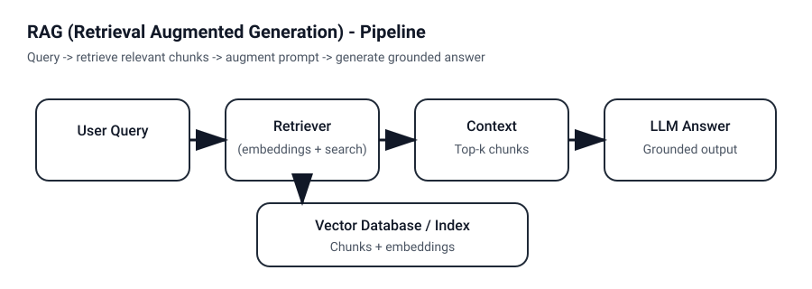

Know when to use RAG in your agent system
Understand the purpose of each component in the RAG pipeline
Understand the effect of chunk size, query phrasing, and prompt templates
Know how to optimize retrieval using top-K variation
See how RAG supports cross-document synthesis
You should work in a self-selected team of 2 or three people on these exercises. If you have difficulty finding a team, please ask the instructor for assistance. You should do the first few exercises together. If you wish, you may split up the remaining exercises among your team members, but you should share and discuss the results with each other afterwards. Put copies of all of the results in the GitHub for every team member, and list the names of the people in your team in the README.md file.
Download manual_rag_pipeline_universal_updated.ipynb and get it running on CoLab or your own computer. I recommend CoLab, because it will be 5X faster unless you have a very powerful GPU on your machine. the notebook will, however, run correctly on any machine with or without a GPU. Download Corpora.zip and unzip it. (See below for details about the corpora.)
Compare LLM's answers with and without retrieval augmentation.
Setup: Use Qwen 2.5 1.5B (or another small open model) with the Model T Ford repair manual, and then with the Congressional Record corpus (separately).
Queries to try with the Model T Ford corpus:
"How do I adjust the carburetor on a Model T?"
"What is the correct spark plug gap for a Model T Ford?"
"How do I fix a slipping transmission band?"
"What oil should I use in a Model T engine?"
Queries to try with the Congressional Record corpus:
These issue numbers are for your use in finding the correct answers, don't give them to the LLM.
"What did Mr. Flood have to say about Mayor David Black in Congress on January 13, 2026?" (See CR Jan 13, 2026)
"What mistake Elise Stefanovic make in Congress on January 23, 2026?" (See CR Jan 23, 2026)
"What is the purpose of the Main Street Parity Act?" (See CR Jan 20, 2026)
"Who in Congress has spoken for and against funding of pregnancy centers?" (See CR Jan 21, 2026)
For each query:
Ask the model directly (no RAG)
Ask using your RAG pipeline
Document:
Does the model hallucinate specific values without RAG?
Does RAG ground the answers in the actual manual?
Are there questions where the model's general knowledge is actually correct?
Optional subtask: Put both the Model T manual and the Congressional Record issues into the same RAG database. Does this have any affect on the quality of the answers?
Perhaps a larger model without RAG could be competitive with a small model with RAG.
Setup: Write a program (or adapt some of your code from last week) to run GPT 4o Mini with no tools on individual questions (not a conversation). Run it on the queries from Exercise 1.
Document:
Does GPT 4o Mini do a better job than Qwen 2.5 1.5B in avoiding hallucinations?
Which questions does GPT 4o Mini answer correctly? Compare the cut-off date of GPT 4o Mini pre-training and the age of the Model T Ford and Congressional Record corpora.
Compare your local RAG pipeline against a frontier model (GPT-5.2, Claude 4.6, etc.).
Setup:
Local: Qwen 2.5 1.5B with RAG using the Model T manual
Cloud: GPT-4 or Claude via their web interface (no file upload)
Queries to try:
All the ones from Exercise 1.
Document:
Where does the frontier model's general knowledge succeed?
When did the frontier model appear to be using live web search to help answer your questions?
Where does your RAG system provide more accurate, specific answers?
What does this tell you about when RAG adds value vs. when a powerful model suffices?
Vary the number of chunks retrieved and observe how it affects answer quality. You can use any of the corpora and your own queries.
Test with: k = 1, 3, 5, 10, 20
For each k value:
Run the same 3-5 queries
Note answer quality, completeness, and accuracy
Note response latency
Questions to explore:
At what point does adding more context stop helping?
When does too much context hurt (irrelevant information, confusion)?
How does k interact with chunk size?
Test how well your system handles questions that cannot be answered from the corpus. You can use any of the corpora and your own queries.
Types of unanswerable questions:
Completely off-topic: "What is the capital of France?"
Related but not in corpus: "What's the horsepower of a 1925 Model T?" (if not in your manual)
False premises: "Why does the manual recommend synthetic oil?" (when it doesn't)
Document:
Does the model admit it doesn't know?
Does it hallucinate plausible-sounding but wrong answers?
Does retrieved context help or hurt? (Does irrelevant context encourage hallucination?)
Experiment: Modify your prompt template to add "If the context doesn't contain the answer, say 'I cannot answer this from the available documents.'" Does this help?
Test how different phrasings of the same question affect retrieval. You can use any of the corpora and your own queries or the ones below for the Model T or Learjet corpus.
Choose one underlying question and phrase it 5+ different ways:
Formal: "What is the recommended maintenance schedule for the engine?"
Casual: "How often should I service the engine?"
Keywords only: "engine maintenance intervals"
Question form: "When do I need to check the engine?"
Indirect: "Preventive maintenance requirements"
For each phrasing:
Record the top 5 retrieved chunks
Note similarity scores
Compare overlap between result sets
Questions to explore:
Which phrasings retrieve the best chunks?
Do keyword-style queries work better or worse than natural questions?
What does this tell you about potential query rewriting strategies?
Test how overlap between chunks affects retrieval of information that spans chunk boundaries. You can use any of the corpora and your own queries. Note: this exercise takes a long time to run. Only try it on CoLab or a similar platform with T4 or better GPUs.
Setup: Re-chunk your corpus with different overlap values while keeping chunk size constant (e.g., 512 characters):
Overlap = 0 (no overlap)
Overlap = 64
Overlap = 128
Overlap = 256
For each configuration:
Rebuild the index
Find a question whose answer spans what would be a chunk boundary
Test retrieval quality
Document:
Does higher overlap improve retrieval of complete information?
What's the cost? (Index size, redundant information in context)
Is there a point of diminishing returns?
Test how chunk size affects retrieval precision and answer quality. You can use any of the corpora and your own queries. Note: this exercise takes a long time to run. Only try it on CoLab or a similar platform with T4 or better GPUs.
Setup: Chunk your corpus at different sizes:
Very small: 128 characters
Medium: 512 characters
Very large: 2048 characters
For each configuration:
Rebuild the index
Run the same set of 5 queries
Examine retrieved chunks and final answers
Questions to explore:
How does chunk size affect retrieval precision (relevant vs. irrelevant content)?
How does it affect answer completeness?
Is there a sweet spot for your corpus?
Does optimal size depend on the type of question?
Analyze the similarity scores returned by your retrieval system. You can use any of the corpora and your own queries.
For 10 different queries:
Retrieve top 10 chunks
Record all similarity scores
Examine the score distribution
Look for patterns:
When is there a clear "winner" (large gap between #1 and #2)?
When are scores tightly clustered (ambiguous)?
What score threshold would you use to filter out irrelevant results?
How does score distribution correlate with answer quality?
Experiment: Implement a score threshold (e.g., only include chunks with score > 0.5). How does this affect results?
Test how the system prompt affects generation quality. You can use any of the corpora and your own queries.
Create variations of your RAG prompt:
Minimal: Just context and question, no instructions
Strict grounding: "Answer ONLY based on the context. If the answer isn't there, say so."
Encouraging citation: "Quote the exact passages that support your answer."
Permissive: "Use the context to help answer, but you may also use your knowledge."
Structured output: "First list relevant facts from the context, then synthesize your answer."
For each prompt variation:
Run the same 5 queries
Evaluate: accuracy, groundedness, helpfulness, citation quality
Document:
Which prompt produces the most accurate answers?
Which produces the most useful answers?
Is there a trade-off between strict grounding and helpfulness?
Test questions that require combining information from multiple chunks. You can use any of the corpora and your own queries.
Example design queries that require synthesis:
"What are ALL the maintenance tasks I need to do monthly?"
"Compare the procedures for adjusting X vs. adjusting Y"
"What tools do I need for a complete tune-up?" (if tools are mentioned in separate sections)
"Summarize all safety warnings in the manual"
Experiment with top_k:
Try k=3, k=5, k=10
Does retrieving more chunks improve synthesis?
Document:
Can the model successfully combine information from multiple chunks?
Does it miss information that wasn't retrieved?
Does contradictory information in different chunks cause problems?
manual_rag_pipeline_universal_updated.ipynb - python notebook for running a complete RAG pipeline. Runs locally or on CoLab. Assumes the pdf files have embedded text, as do the pdfs in Corpora.zip. Feel free to break down some of the cells into multiple cells so you have finer-grained control over execution of the pipeline.
Corpora.zip - some test corpora for RAG. It contains the following corpora, each as pdf with embedded text and the exact embedded text as a plain text file. Use the former for your pipeline experiments and the latter to check if any retrieval failures were due to RAG failures or due to OCR failures.
The Model T Ford Service Manual
Issues of the Congressional Record from January, 2026 - long after the training date of any of the LLMs we are using.
The Learjet maintenace manual
The European Union AI Act - because it is 200 pages long, after chunking it can serve as a corpus itself
pdf_ocr - A program that performs OCR on scanned pdf files and embeds text as well as creating a text file. You may find this useful for later projects.
Create a subdirectory in your GitHub portfolio named Topic5RAG and save your programs, each modified version named to indicate its task number and purpose. Create appropriately named text files saving the outputs from your terminal sessions running the programs. Create README.md with a table of contents of the directory.